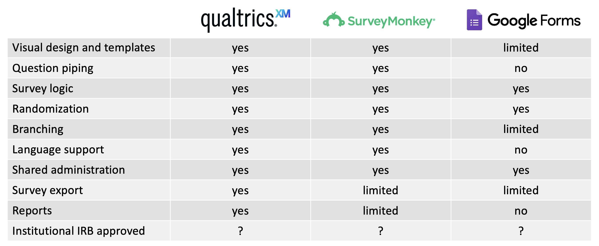
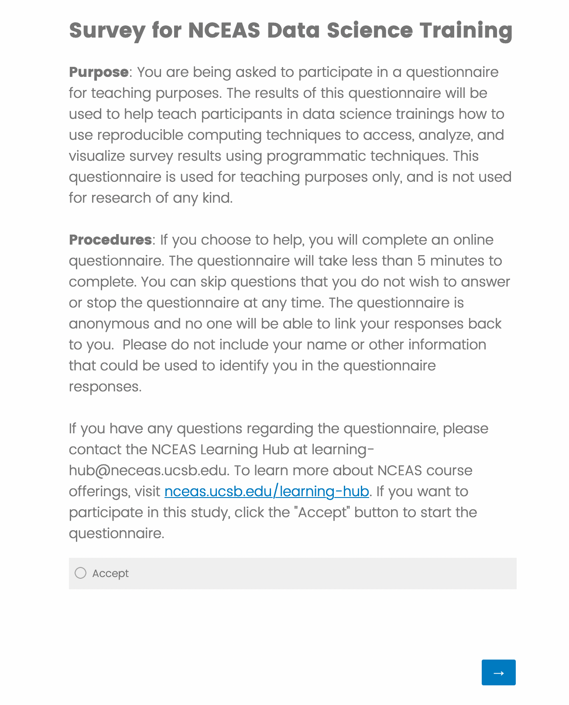
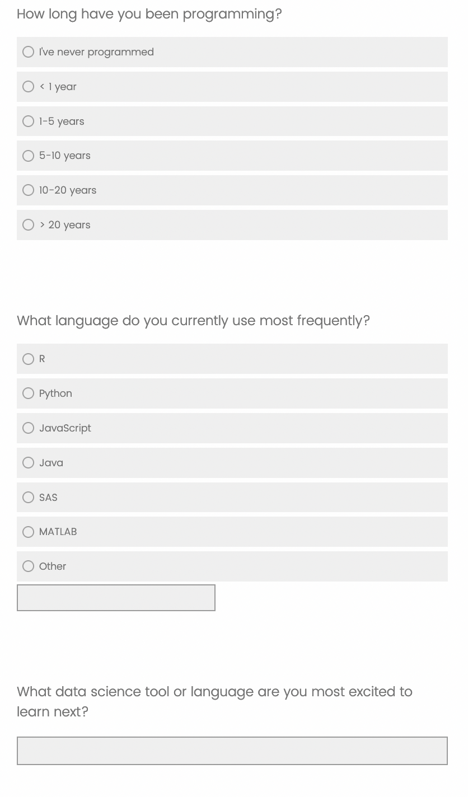

Answer
library(readr)
library(dplyr)
library(tidyr)
library(ggplot2)
library(qualtRics)
library(knitr)
library(kableExtra)Surveys and questionnaires are commonly used research methods within social science and other fields. For example, understanding regional and national population demographics, income, and education as part of the National Census activity, assessing audience perspectives on specific topics of research interest (e.g. the work by Tenopir and colleagues on Data Sharing by Scientists), evaluation of learning deliverable and outcomes, and consumer feedback on new and upcoming products. These are distinct from the use of the term survey within natural sciences, which might include geographical surveys (“the making of measurement in the field from which maps are drawn”), ecological surveys (“the process whereby a proposed development site is assess to establish any environmental impact the development may have”) or biodiversity surveys (“provide detailed information about biodiversity and community structure”) among others.
Although surveys can be conducted on paper or verbally, here we focus on surveys done via software tools. Needs will vary according to the nature of the research being undertaken. However, there is fundamental functionality that survey software should provide including:
More advanced features can include:
Commonly used survey software within academic (vs market) research include Qualtrics, Survey Monkey and Google Forms. Both Qualtrics and Survey Monkey are licensed (with limited functionality available at no cost) and Google forms is free.

In this lesson we will use the qualtRics package to reproducible access some survey results set up for this course.
The survey is very short, only four questions. The first question is on its own page and is a consent question, after a couple of short paragraphs describing what the survey is, it’s purpose, how long it will take to complete, and who is conducting it. This type of information is required if the survey is governed by an IRB, and the content will depend on the type of research being conducted. In this case, this survey is not for research purposes, and thus is not governed by IRB, but we still include this information as it conforms to the Belmont Principles. The Belmont Principles identify the basic ethical principles that should underlie research involving human subjects.

The three main questions of the survey have three types of responses: a multiple choice answer, a multiple choice answer which also includes an “other” write in option, and a free text answer. We’ll use the results of this survey, which was sent out to NCEAS staff to fill out, to learn about how to create a reproducible survey report.

qualtiRcsFirst, open a new Quarto document and add a chunk to load the libraries we’ll need for this lesson:
library(readr)
library(dplyr)
library(tidyr)
library(ggplot2)
library(qualtRics)
library(knitr)
library(kableExtra)Next, we need to set the API credentials. The qualtrics_api_credentials function creates environment variables to hold your Qualtrics account information. The function can either temporarily store this information for just this session, or it can modify the .Renviron file to set your API key and base URL so that you can access Qualtrics programmatically from any session.
The API key is as good as a password, so care should be taken to not share it publicly. For example, you would never want to save it in a script. The function below is the rare exception of code that should be run in the console and not saved. It works in a way that you only need to run it once, unless you are working on a new computer or your credentials changed. Note that in this book, we have not shared the actual API key, for the reasons outlined above. For the course, we will share the key via a file or by e-mail. Provide the key as a string to the api_key argument in the function below:
key_file <- read_lines("/tmp/qualtrics-key.txt")
qualtrics_api_credentials(api_key = key_file[1], base_url = "ucsb.co1.qualtrics.com", install = FALSE, overwrite = FALSE)The .Renviron file is a special user controlled file that can create environment variables. Every time you open Rstudio, the variables in your environment file are loaded as…environment variables! Environment variables are named values that are accessible by your R process. They will not show up in your environment pane, but you can get a list of all of them using Sys.getenv(). Many are system defaults.
To view or edit your .Renviron file, you can use usethis::edit_r_environ().
To get a list of all the surveys in your Qualtrics instance, use the all_surveys function.
surveys <- all_surveys()
glimpse(surveys)This function returns a list of surveys, in this case only one, and information about each, including an identifier and it’s name. We’ll need that identifier later, so let’s go ahead and extract it using base R from the data frame.
id <- surveys %>%
filter(name == "Survey for Data Science Training") %>%
pull(id)You can retrieve a list of the questions the survey asked using the survey_questions function and the survey id.
questions <- survey_questions(id)
questionsThis returns a data.frame with one row per question with columns for question id, question name, question text, and whether the question was required. This is helpful to have as a reference for when you are looking at the full survey results.
To get the full survey results, run fetch_survey with the survey id.
survey_results <- fetch_survey(id)
survey_results %>% head(1) %>% glimpseThe survey results table has tons of information in it, not all of which will be relevant depending on your survey. The table has identifying information for the respondents (eg: ResponseID, IPaddress, RecipientEmail, RecipientFirstName, etc), much of which will be empty for this survey since it is anonymous. It also has information about the process of taking the survey, such as the StartDate, EndDate, Progress, and Duration. Finally, there are the answers to the questions asked, with columns labeled according to the qname column in the questions table (eg: Q1, Q2, Q3). Depending on the type of question, some questions might have multiple columns associated with them. We’ll have a look at this more closely in a later example.
As mentioned above, Qualtrics helpfully provides some metadata with each response. Let’s use some of this information now. First, you’ll noticed a column named Finished, containing TRUE or FALSE values. This indicates whether the respondent fully completed and submitted the survey. In many cases, you will want to filter out unfinished survey responses to avoid analyzing incomplete answers. Let’s go ahead and remove those now.
# Report the frequency of finished vs unfinished responses
survey_results %>% count(Finished)
# Remove unfinished responses
survey_results <- survey_results %>% filter(Finished)Second, you’ll noticed columns named LocationLongitude and LocationLatitude. These give an approximate best-guess location of the respondent based on IP address. This is usually accurate to a city level in the United States, but perhaps only to a country for many international respondents, and can be completely wrong in some cases (e.g., if the respondent is using a VPN). Nevertheless, it can be useful to give at least a rough sense of where your respondents are located. Let’s use leaflet to draw a quick map of our survey respondents.
library(leaflet)
survey_results %>%
leaflet %>%
addTiles() %>%
addMarkers(
lng = ~ LocationLongitude,
lat = ~ LocationLatitude,
popup = ~ Q2
)Let’s look at the responses to the second question in the survey, “How long have you been programming?” Remember, the first question was the consent question.
We’ll use the dplyr and tidyr tools we learned earlier to extract the information. Here are the steps:
select the column we want (Q2)group_by and summarize the valuesq2 <- survey_results %>%
select(Q2) %>%
group_by(Q2) %>%
summarise(n = n())We can show these results in a table using the kable function from the knitr package:
kable(q2, col.names = c("How long have you been programming?",
"Number of responses")) %>%
kable_styling()For question 3, we’ll use a similar workflow. For this question, however there are two columns containing survey answers. One contains the answers from the controlled vocabulary, the other contains any free text answers users entered.
To present this information, we’ll first show the results of the controlled answers as a plot. Below the plot, we’ll include a table showing all of the free text answers for the “other” option.
q3 <- survey_results %>%
select(Q3) %>%
group_by(Q3) %>%
summarise(n = n())ggplot(data = q3,
mapping = aes(x = Q3, y = n)) +
geom_col() +
labs(x = "What language do you currently use most frequently?",
y = "Number of reponses") +
theme_minimal()Now we’ll extract the free text responses:
q3_text <- survey_results %>%
select(Q3_7_TEXT) %>%
drop_na()
kable(q3_text, col.names = c("Other responses to 'What language do you currently use most frequently?'")) %>%
kable_styling()The last question is just a free text question, so we can just display the results as is.
q4 <- survey_results %>%
select(Q4) %>%
rename(`What data science tool or language are you most excited to learn next?` = Q4) %>%
drop_na()
kable(q4, col.names = "What data science tool or language are you most excited to learn next?") %>%
kable_styling()Google forms can be a great way to set up surveys, and it is very easy to interact with the results using R. The benefits of using google forms are a simple interface and easy sharing between collaborators, especially when writing the survey instrument.
The downside is that google forms has far fewer features than Qualtrics in terms of survey flow and appearance.
To show how we can link R into our survey workflows, I’ve set up a simple example survey here.
I’ve set up the results so that they are in a new spreadsheet here:. To access them, we will use the googlesheets4 package.
First, open up a new Quarto doc and load the googlesheets4 library:
library(googlesheets4)Next, we can read the sheet in using the same URL that you would use to share the sheet with someone else. Right now, this sheet is public
responses <- read_sheet("https://docs.google.com/spreadsheets/d/1CSG__ejXQNZdwXc1QK8dKouxphP520bjUOnZ5SzOVP8/edit?usp=sharing")The first time you run this, you should get a popup window in your web browser asking you to confirm that you want to provide access to your google sheets via the tidyverse (googlesheets) package.
My dialog box looked like this:

Make sure you click the third check box enabling the Tidyverse API to see, edit, create, and delete your sheets. Note that you will have to tell it to do any of these actions via the R code you write.
When you come back to your R environment, you should have a data frame containing the data in your sheet! Let’s take a quick look at the structure of that sheet.
glimpse(responses)So, now that we have the data in a standard R data.frame, we can easily summarize it and plot results. By default, the column names in the sheet are the long fully descriptive questions that were asked, which can be hard to type. We can save those questions into a vector for later reference, like when we want to use the question text for plot titles.
questions <- colnames(responses)[2:5]
glimpse(questions)We can make the responses data frame more compact by renaming the columns of the vector with short numbered names of the form Q1. Note that, by using a sequence, this should work for sheets from just a few columns to many hundreds of columns, and provides a consistent question naming convention.
names(questions) <- paste0("Q", seq(1,4))
questions
colnames(responses) <- c("Timestamp", names(questions))
glimpse(responses)Now that we’ve renamed our columns, let’s summarize the responses for the first question. We can use the same pattern that we usually do to split the data from Q1 into groups, then summarize it by counting the number of records in each group, and then merge the count of each group back together into a summarized data frame. We can then plot the Q1 results using ggplot:
q1 <- responses %>%
select(Q1) %>%
group_by(Q1) %>%
summarise(n = n())
ggplot2::ggplot(data = q1, mapping = aes(x = Q1, y = n)) +
geom_col() +
labs(x = questions[1],
y = "Number of responses",
title = "To what degree did the course meet expectations?") +
theme_minimal()If you don’t want to go through a little interactive dialog every time you read in a sheet, and your sheet is public, you can run the function gs4_deauth() to access the sheet as a public user. This is helpful for cases when you want to run your code non-interactively. This is actually how I set it up for this book to build!
Similar to Qualtrics and qualtRics, there is an open source R package for working with data in Survey Monkey called svmkR. This package provides a suite of tools to work with Survey Monkey surveys. Note that this package is only available to install through GitHub. This is great, it makes is open source and easy to use. However, it is important tot make sure that the package is being maintain. In this case if we look at the GitHub repository with this package we can see that last updates were done somewhat recent. We are not going to cover this package here but fell free to explore and try it out if you use Survey Monkey as a platform to collect data. We hope that the principles describe in this lesson help you navigate how to access the data (in a reproducible way!).